武汉“封城”的第一天
原文链接 备份链接 文 | 王彦入 王丹妮 程静之 殷盛琳 李晓芳 周航 叶雯 曾宪雯 编辑 | 王珊 陶若谷 33岁的刘科戴上两层口罩独自走进地铁，夹杂在路人中间。像他这样拉着行李箱的人并不少见，彼此间默契地保持着距离。三天前，他刚刚从 …

（图片来源：林晨同学Hearing）
一条拥有至少41万来自湖北的读者。
今天是大年初一，
我们完全没有心情过年。
过去两天，
我们一起经历了武汉正式封城，
后来湖北各市陆续传出封锁的消息，
全国多个省启动
重大公共突发卫生事件一级响应。
在病毒疫情面前，
让真实、有效的信息快速流通，
或许是对抗疫情的最好方式。

武汉封城后的24小时 （图片来源：林晨同学Hearing）
昨天，一条通过微信、微博等各个渠道，
面向读者征集了与疫情相关的个人故事，
收到了几百封珍贵的回复。
其中有奋战在一线的医务人员，
为了不脱下防护服，
一整天不敢喝水；
有他们的家人，
担心却不敢打电话打扰；
有湖北人被疫情阻断了向爱人提亲的旅程。
一月初就深入武汉的记者发来了疫区见闻，
主动自我隔离的疑似病患正在慢慢恢复……

封城后武汉街边的路人 （图片来源：林晨同学Hearing）
今天，我们摘录了一部分读者来信，
作为这场无声的战役中小小的记录。
同时，我们也继续开放疫情故事的征集渠道，
期待更多来自一线的声音。
讲述者 全国各地的普通人
*编 辑 * 一条编辑部****
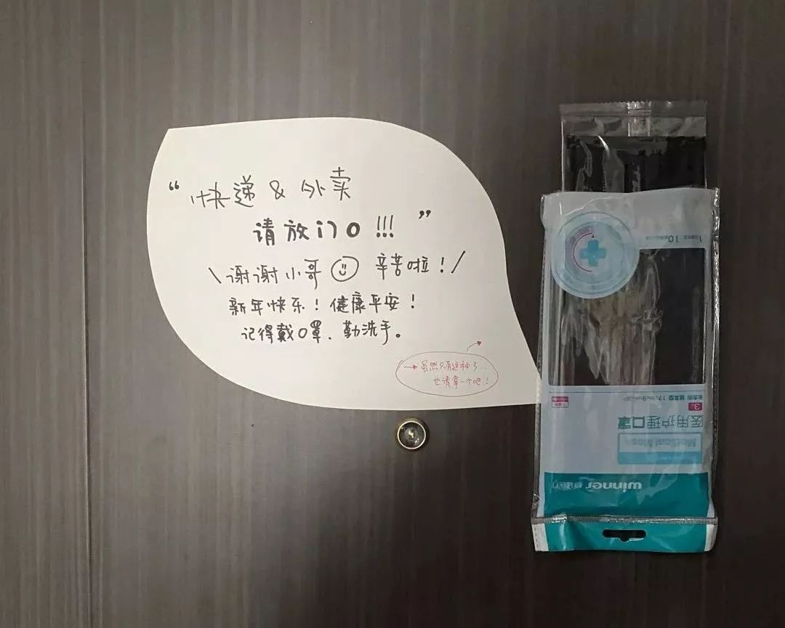
某位上海朋友在家门口为外卖小哥放的口罩
不知道是谁送的外卖，好暖
讲述者：冰的可乐是辣的
年龄：20+
坐标：武汉
傍晚看到了一个外卖小哥带着一堆外卖送给医生，医生问谁送的，外卖小哥说是个匿名的人，顿时感觉人间好值得。
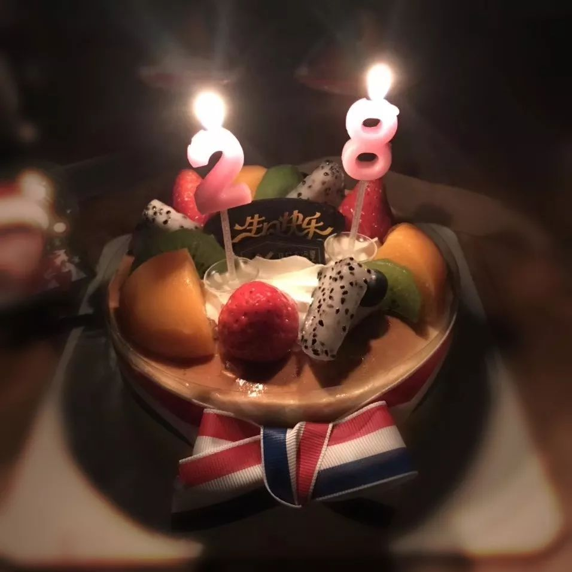
朋友的生日蛋糕
生日快乐，我的武汉朋友
讲述者：R
年龄：90后
坐标：上海
朋友是武汉人，大年三十是她的生日，也是武汉封城的第一天。她全副武装帽子口罩下楼买了蛋糕：“生活还是要有点仪式感，日子还是要过嘛。”祝她生日快乐，健康平安！
我的妈妈是医生：从非典到新型肺炎
讲述者：Titaniumxi
年龄：20+
坐标：武汉
2003年，非典，我妈33岁，一月没进家门。2020年，新型冠状病毒，我妈50岁，开始了新的战斗。1月20号凌晨，她12:05接到电话，穿衣服开车去医院。我一个人害怕又担心，不敢给我妈打电话，怕耽误她工作。今天中午她回家，叮嘱我贴对联送年货，30分钟又走了。
我妈是妻子、妈妈、女儿，国难面前她是英雄！
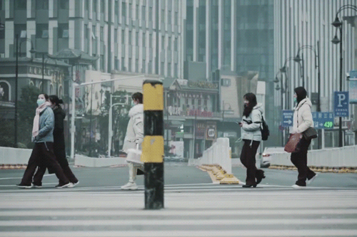
武汉封城后的24小时 （图片来源：林晨同学Hearing）
本打算去香港女友家提亲的我，
取消了机票
讲述者：K
年龄：30岁左右
坐标：武汉周边
本人在武汉周边县村过年，原计划初三经香港飞往台北，向相爱多年的女友及家人提亲，但看现在疫情发展局势，基于怕影响别人的情况下预计会取消延后，希望得到理解，希望疫情尽快好起来，希望一切都能顺利平安。
从非典到新型肺炎，
我从幼儿园成了一名大学生
讲述者：冯天天_gz
年龄：20出头
坐标：武汉
03年我在北京，还是个幼儿园小朋友，20年我在武汉已经是个大学生了，在哪里都没有躲过，但这种一方有难八方支援的感觉会让人很感动……
武汉人在深圳：希望夏天快点到来
讲述者：june
年龄：30岁左右
坐标：深圳
武汉人在深圳。武汉封城，一天一晚没离开过手机，作为母亲我想回家跟宝宝一块，作为湖北人恨自己能做的太有限，恨自己没学医……希望国家能给予足够的医疗资源进湖北各地市，希望今年的夏天快点到。

武汉的肺炎亲历者：
疑似病例，在家隔离，自我治愈中
讲述者：地味鸭
职业：教师
年龄：29岁
坐标：江苏人，在武汉工作
今天是公元2020年1月24日，除夕，也是武汉封城第二天。
我和家属两个江苏人滞留武汉，坐困危城。
关于封城前后的种种我并无发言权。因为尚未痊愈，我已多日足不出户在家吃药，近来都是家属出门帮我抢购食物药品。
2019年12月底，有朋友告诉我武汉可能出现了“非典”，当时我来汉仅有三个月。
元旦以后，看到武汉发现病毒的官方新闻。家属立刻下单购买了两大盒N95口罩。
1月8日傍晚，江苏老家的外公去世了，我立刻买票准备回家。戴上N95，很不适应，问家属新闻说病毒并不严重，可不可以不戴。他让我必须戴上。
到达汉口站，行人数以万计，目力所及，除我以外并无一个人戴口罩。汉口站并没有请旅客防范新型病毒戴上口罩的提示，不少人用怪异的眼光打量我。
上高铁后，车厢空气不流通，我感到呼吸困难，就摘下了口罩，出站时又戴上了。

封城前一晚，光谷最繁华的地段，两个人都没有戴口罩
参加完老家的葬礼，我于1月12日坐动车抵达汉口站返回武汉，地铁二号线上我又是唯一一个戴口罩的怪胎。老家和武汉往返皆无任何检查，我的旅途畅通无阻。
1月14日，我开始打喷嚏、流鼻涕。当时不知道新型冠状病毒有潜伏期，只以为是在乡下接触人太多患上的普通流感。我忙于手头工作。家属还在每日关注病毒，但感染者一连多日都无增长。我跟他说，这次应该可以扼杀在摇篮里、不会大规模传播了吧。
1月17日，我开始发烧，家属出门帮我买体温计和退烧药。18日早起已退烧，但下午，我忽然又开始发烧。收拾好东西，我们都戴着N95步行到离家最近的一家三甲医院，挂号后先在急诊量体温。我旁边一个高烧男子量完体温直接走了。护士问医生有无登记那个人，医生说没有，登记不过来，又说我是低烧，在挂号单上记下我的体温数字。
另一个娇小的女医生询问我的病史，得知我曾去过汉口站，她立刻在病历上写下“曾去华南海鲜市场附近汉口火车站”。我搜了地图，才发现汉口站离华南海鲜市场只有800米。
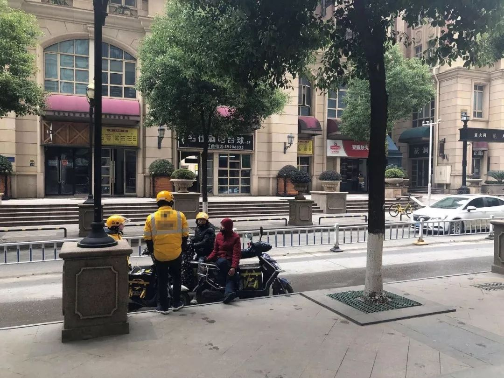
封城第二天的武汉街头
医生取了咽拭子，让我去抽血、拍CT。烧得昏昏沉沉，好不容易出了片子和报告，显示我并不是甲乙流。
急诊医生对着我的CT沉吟许久，打电话登记了我的姓名和年龄，开了奥司他韦和头孢让我回家吃药。急诊科此时已人满为患，一大堆发烧的病人围着医生，很多人都没有戴口罩。医生和护士有人戴着N95，有人戴着两层外科口罩。人群中的医生又气又急，高声说：“这个病毒现在已经很严重了！形势很严峻！请大家注意个人卫生，排好队一个一个来……”
走出医院，我跟家属说我应该不是吧！医生都没有说我是。家属嗤之以鼻：她也没有说你不是啊！
我和家属有注意区分食物和餐具。三天后，家属不让我出门。他又去了一次医院。
医生看了片子说，光凭CT无法确诊，必须要做试剂盒子。家属追问有没有试剂盒子，医生说他们没有拿到，上级并未发给他们。有盒子的医院也需要审批才能做。家属说那我岂不是始终无法确诊？
我产生了一系列的疑问：关于试剂盒子、关于疑似人数很少却病床爆满……想不明白这些问题，只能继续吃药。

封城第二天，附近的小区
一位师姐提示我应该于此时离开武汉，做好防护打车回江苏。但考虑到家中长辈年迈体弱，万一我真的是新型肺炎，回到家传染给老人，后果不堪设想。
我们退了车票，开始每日下单耐储存的蔬菜和鸡蛋、冰冻肉类，把冰箱厨房塞得满满当当。
22日晚，我所在的一个群有人问：“武汉封城是真的吗？”次日醒来，手机消息已爆炸。每一个群都在讨论武汉封城。
家属说他凌晨看到新闻后，已出门抢购了好几趟食物，又去药店买了达菲、布洛芬，抢到了最后的一点酒精，还去麦当劳给我买了新款汉堡。
吃着汉堡刷豆瓣，才知道医护人员上班打不到车有多么艰辛，全城公共交通消失后，住得偏远的武汉市民又有多么困难。
我家物资充足，又有足够口罩，地理位置极好，还有家属和猫陪我。最重要的是我已好转了，不必去医院冒着风险排一整天的长队检查或打针，讨得一张救命的床位。
我们二人如今不幸中的万幸，几乎全亏家属的高度警惕和超强行动力，以及我的悲观倾向和囤积癖好，还有一点运气。
家属给我分析，说我可能就是新型肺炎，但症状较轻，靠自身免疫力痊愈。也可能是普通肺部炎症，吃药后慢慢好转。我究竟得的是什么病，这个问题应该永远找不到答案了。
如果能再给我一次机会，我无论如何难受，也决不在高铁上摘下口罩。
今天是大年三十，我已几乎痊愈。又不敢想这次围困会持续多久，只能闷头读书。思绪乱飞，不禁想起在我前面做CT的那位“有问题”患者，他还幸存在人世吗？
于封城次日，杂乱地记下我个人微不足道的经历，只是为了提醒自己：不要忘记，不能忘记，不敢忘记。

我们选择陪你留下
——一封医务人员夫妻的通信
讲述者：刘秀英
坐标：湖南省疾控中心
刘秀英爱人
坐标：湘雅二医院感染科
“什么？你们也退票啦？”我的一个电话，让你很错愕，就如我今天早上8:20接到你的电话：“我们要成立应急办，把我的票退了！”
当时接到电话后我有些手足无措，我已经准备好了回家的物品。
等我再返回座机电话问“我和女儿怎么办？”你只说了一句：“不要打电话了啊，这里好多病人！”
和女儿沟通后，我们选择陪你留下……
从1月8日抢到票后都是憧憬着的。我们一家三口至少有5年没一起回过我老家了。因为身为医生的你，因为双方父母相距1500多公里，经常是过年劳燕分飞，各自回家尽孝。今年终于顺利达成共识……欣喜之余，脑子里预演了一家三口回到88岁老母亲身边的各种场景：家族聚会，儿女簇拥，姐妹谈情，如何住宿，去哪儿摄影……
1月21日上午，坐发热门诊的你，发照一张：防护眼镜、防护面罩都带上了；告知有急事打座机，心里咯噔一下。
大学同学群问湖南情况，甩了一张你当天的工作照，你接着甩了一张全副武装的二级防护照，说下午防护升级了。瞬间，你这个一线人员接受群内同学的致敬和慰问。“不辛苦”的回应中，带出了你的难言之隐——不敢喝水：防护服是连体的，而就诊的患者排成长队……
随手把二级防护照转给了女儿，没想到一进家门，她嚎啕大哭。我只能安慰，没事没事，但心却揪了起来……开始逐天盘问你：看了多少个发热病人，送检了多少份样本检测新冠状病毒，有没有确诊病人……

穿上防护服后的工作照
焦虑会变成“嫌弃”。
“请你今天务必在医院洗个澡回来，哪怕借病人的洗手间……”
“我今天坐肝病门诊，再说这两天我回来内外衣服全部消毒浸泡洗涤……”
因为在感染科工作，你每天进门第一件事就是先洗澡；工作服装从来都是隔离存放、单独洗涤；每天工作洗手不下百次，冬天手上都是皲裂……
但随着全国疫情进展的多方位报道，我禁不住想：如果在采取有效防护措施之前，你在发热门诊坐诊接触了没被发现的新冠状病毒肺炎患者，或者说你防护后遇到一个超级传播者（尽管还没出现），你都有可能因为现处潜伏期，成为潜在的传染源，我和女儿都是潜在的密切接触者，一旦回去，给88岁高龄的母亲、患脑血管病的姐姐等带来灾难。
我们选择留下，就是想把种种可能的可能尽可能地限制在我们这个小家。
疫情当前，作为普通公民，保护家人，让自己成为抗疫链条上负责任的一环，就是爱国家；身为疾控一员，作为储备力量，在长沙整装待发，为一线的你洗好衣、做好饭，也是贡献。
哪有什么岁月静好，只不过是有人在替你负重前行。
今天，轮到你负重前行，我们选择留下，与你并肩，抵御疫情，佑护生命！我们坚信，每一个人每一个细微贡献，都会为“抗疫”胜利铺就一块基石。唯有众志成城，才能天佑中华！
写于2020年1月23日。
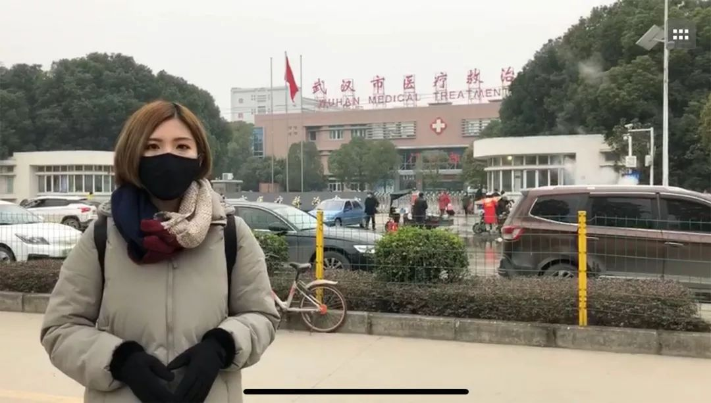
一月初，我深入武汉采访拍摄
讲述者：毛毛
年龄：30岁
职业：记者
坐标：台北，曾到武汉采访
我是台湾某新闻台的大陆特派记者，12月31号是我们第一次接收到疫情讯息，台北总部1月2号早上，突然传来指令要我们立刻前往武汉采访。
当下我立刻看航班，简单收拾行囊就和摄影匆匆出发，乘坐了前往武汉的班机。
1月3日，一早8点前往华南海鲜市场。我和摄影因为买不到N95，所以戴了3层普通口罩。搭上出租车时，师傅听到我们要去华南海鲜市场，急促地跟我们说：“我劝你别去啊，现在有不明肺炎，那边都封起来啦。”
当时疫情的相关报道还不多，大众还不是很了解，沿途的人几乎都没戴口罩，也没有警觉。
1月3日前往华南海鲜市场周边采访
华南海鲜市场这时候已经封起来了，我们就在华南海鲜市场外绕，也在附近吃了早餐，每间店都很热闹，大家照吃照喝，开开心心。我当下觉得很恐怖，市场周边全是人，很多摊贩拖着一箱一箱的货，直接在路边卖海鲜。民众也转而到周边去买，而且大家都没有戴口罩。
中午后，我们前往金银潭医院，那里是当地专治肺炎的医院，也有传染病专科，当时有部分确诊新型肺炎的病患直接送往那里。来看诊的人非常多，大家都在医院来来去去。
看到这情景，我想疫情会爆发是必然的。
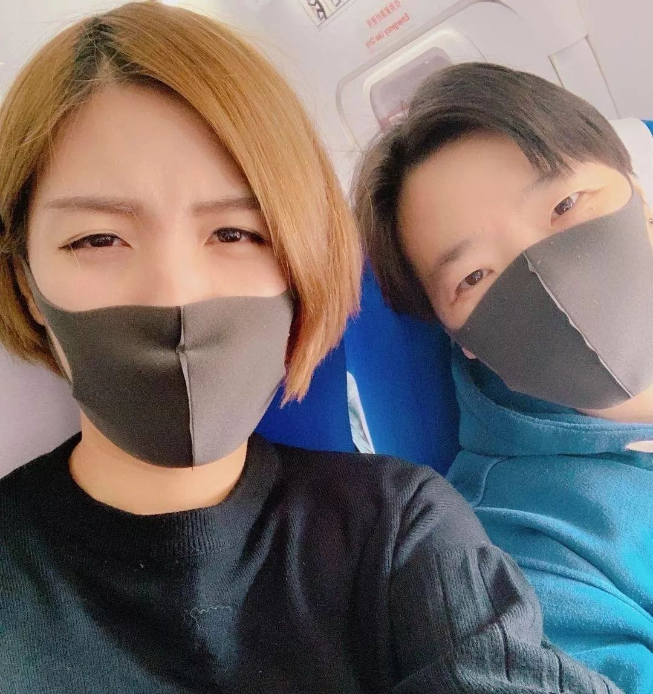
回到酒店后，酒店门口就是我的“消毒区”，我和摄影互相往对方身上喷洒酒精，从头到脚都不放过，当天的衣物我全部丢了。真的太害怕了。
1月4号，我们离开武汉。1月17号，结束大陆派驻，回到台湾。
如今武汉封城，希望一切都能平安。
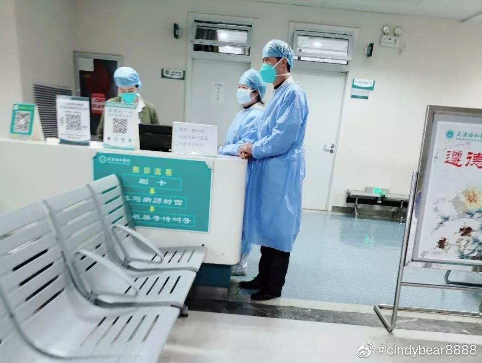
图片来源：cindybear8888微博
我们不害怕上战场，但是不能赤膊上阵
讲述者：一名普通的医务工作者
坐标：某市三甲医院
我的爱人是危重症救治组专家。今天年三十，他值班。
我和爱人都在三甲医院工作。这次我们医院是冠状病毒肺炎定点救治医院，前天我们市确诊了一名患者。
我在门诊工作，今年我们医院取消了假期，正常开诊。
其实我们经常遇到各种突发公共事件，会影响日常安排，取消休假。车祸、矿难、禽流感……这次的困难在于，病毒还有太多的不确定性。
可防可控的前提，是先把防控措施落实到位。我尽量在朋友圈刷屏科普，多一点防控常识，少一分感染风险。
医院关于冠状病毒肺炎的学习培训了三轮。有同事主动签了请愿书。
医院的防护用品并不充足，口罩都需要配发。也许过几天会好一些。
如果出现大爆发，我们只希望有足够的医用物资。我们不害怕上战场，但是总不能赤膊上阵吧？
我只希望以后武汉的疫情防控能听专家指导。真心希望武汉早日渡过难关。
祝大家新年都平安健康！
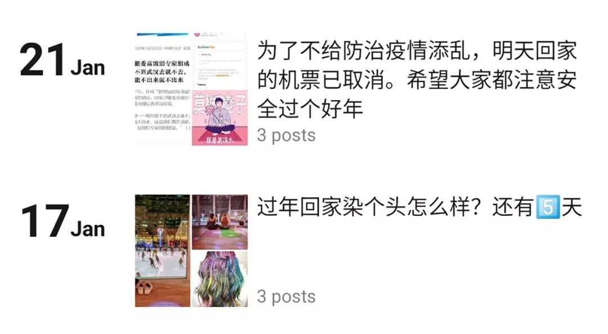
生活在纽约的武汉人：
9年没回家过年的我，再次取消了机票
讲述者：多多
年龄：30岁
职业：心理咨询师
坐标：纽约
我现在长居纽约，父母、外婆等家人均在武汉生活。在美国9年没有回国过年的我，刚刚取消了小半年前订好的回家机票。
去年夏天南方航空开通了纽约直飞武汉的航班，10月我就买了1月23日回武汉的机票。2019年的感恩节和圣诞节假期全部用来加班，攒过年回家的假期。上个礼拜四，我还在朋友圈里开心地发回家倒计时，我妈还说请我做头发。
武汉市第十一医院（红十字会医院）就在爸妈住的小区里。上个周末开始（18日、19日）武汉肺炎疫情愈演愈烈，十一医院门诊人满为患。全家人打电话，催促我取消回家过年的行程，我爸说如果机票退不了，自己补贴我这笔钱。

20、21号打爆了的电话记录
这周礼拜一和礼拜二我电话都打爆了，给爸妈、外婆轮番打，一打就是一个半小时。我妈说之前到处排队买口罩买菜，现在街上都没人，我爸从他们单位拿了一堆包子饺子丸子什么的回家。武汉现在不能进不能出，想到爸爸妈妈外婆万一没有吃的了，我自己好吃好喝的想法都没有了。一边觉得这个票退的好，一边又很难受不能在这个关头陪在家人身边。
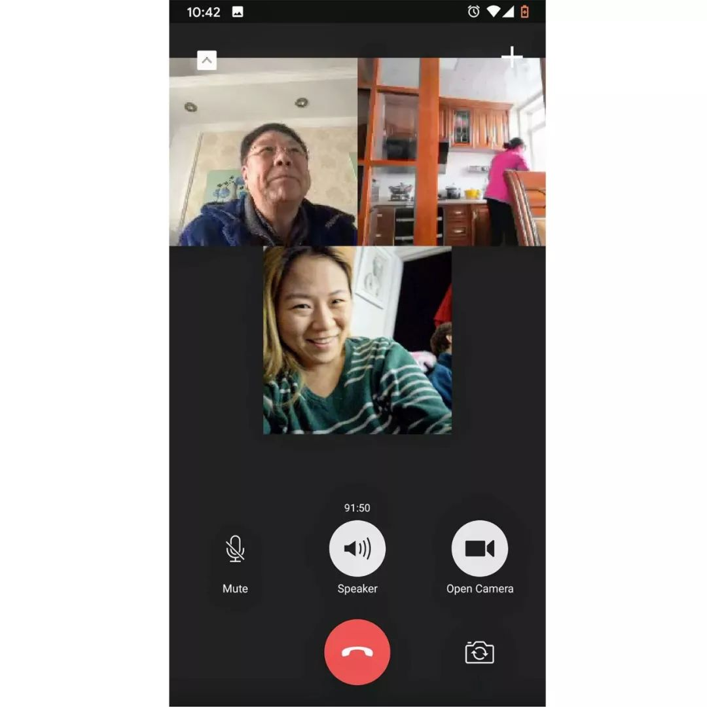
跟爸妈长达一个半小时的视频通话
我外婆现在84岁了，一个人住在杨叉湖二七路，阳光花园。离华南市场和汉口火车站都只要20分钟。爸妈要接她走，老太太也不肯。一个人住习惯了，怎么都不肯挪地方。我给她打了两个视频电话做工作，也做不通。爸妈只好跑去给她留了很多菜和药，老太太保证不出门，我才稍微放心一点。
我老公是土生土长的美国人，不像我们小时候经历过非典，他很不能理解我为什么这么焦急，茶不思饭不想也睡不好。我从小是外婆带大的，她年纪大了，如果这次得了病，我明年就算能回来过年，也没外婆了。

甜饼
防疫盲区：听障群体
讲述者：甜饼
年龄：26岁
职业：听障文化公司创业者
坐标：重庆
我是听障者，现在有个防疫盲区就是听障群体。
现在社会上很多人觉得听障者用手机就能了解信息了，其实是一个误区，听障群体的成分很复杂，大部分学历很低，还有老年聋人，他们大部分是文盲，文字对于他们来说是没有用的，而且听障群体很多人看不懂书面手语，只能通过自然手语来沟通，自然手语又分很多地域性的打法……
目前我看到有一些聋人自媒体在没确认科学信息的情况下，用手语视频传递谣言。以及，还有不少听障者因为被网上言论煽动，言语攻击武汉听障者，因为听障者他们的心理更容易应激过度。
我建了一个线下的防疫信息平台群，邀请了北京大学交叉科学研究院的博士朋友做专业医学指导，也邀请了一些聋人自媒体大V进群，我和我的朋友在做手语防疫指南的资料搜集，也在搭建一个网站，作为应急信息求救通道，聋人的心理疏导。
我正在准备做一些短小的手语科普视频，目前我能够联系的手语翻译在十多名左右，远远不够，网站搭建也在拜托程序员朋友做，技术方面也缺一点，手语科普不是简单的事情。

疫情之下，劝服父母到底有多难？
讲述者：小绿
年龄：27岁
职业：白领
坐标：上海
在23日武汉封城之前，我们一家6口，我和老公、爸妈公婆，都在去日本的游轮上。
在海上的日子没有信号，只能看卫星电视的新闻，21号开始意识到严重性，我甚至觉得，这艘船是末日孤舰，只有这艘船是干净的。

在旅行的游轮上
23日武汉“封城”那天，我们从海上下来。
我爸是个托大的人，觉得疫情都不是事儿，固执地去见了刚从武汉回来的兄弟。于是我开始说服妈妈要和爸爸施行隔离，分房分餐，消毒。
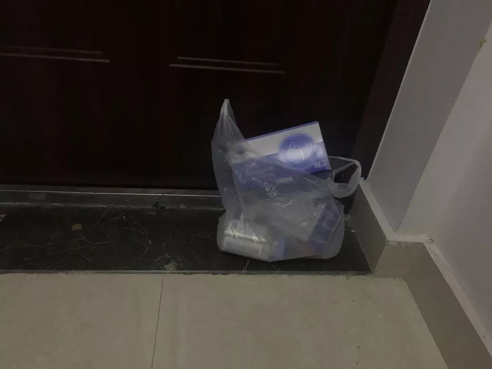
放在父母家门口的口罩
但爸妈住在偏远的地方周边都没有口罩，于是我老公单程60公里驱车前往我父母家，空投了很多口罩，又辗转买到了酒精等，放在门口就离开了，和我妈妈没有任何接触。
我爸持续固执着，觉得不能让自己的兄弟觉得受到了歧视。我苦口婆心，狠话好话都说尽了，“一边是不吃一顿饭，叔叔一时的伤心，还有一边是全家ICU，你选哪边？”“陌生人之间能隔离，亲人之间更应该隔离，因为我们彼此关心着。”后来我爸爸松口了。

爸妈家的小区
现在父母两人在家里都戴着口罩，分餐吃，分房睡，分厕所上，不再出门，时时消毒。但不知道执行起来，父母们能多严格，只能时不时提醒。
毕竟病毒是个无形的东西，有时候在预防的时候，我都会突然觉得很好笑，似乎觉得自己太过夸张，可是因为从来没有受过这种训练，最多是电影电视剧里看过，又觉得防不胜防，不知道病毒以哪种形式存在在空气里。所以一边无限焦虑，一边又觉得很恍惚可笑。
最新消息，我叔叔被居委会要求去做检查了。感觉上海还是防护做得不错的。

1月22日晚，武汉市第七医院外的排队
打持久战，“弹药”一定要充足
讲述者：小陈
年龄：28岁
职业：检验科医务人员
坐标：武汉
朋友是武汉检验科的医务人员，她昨天早上收到任务，两天后她所在的医院将设立定点发热医院，开始收治病人做入院治疗。“逃兵就是开除。但我相信没有一个医务人员会选择不参与抗击疫情的，我一点都不后悔学医，这是我的使命。”
在正式公布第二批定点发热医院前的这三天里，为了安全医院要做改造，所有医务人员都要反复进行防护措施的培训。“培训很难，每个人都要完全掌握，要先保护好自己，才能保护更多的人。”
不过因为交通停运，医务人员上下班很是困难，没有私家车的都是自己在想办法克服。有很多普通人自发地开了微信群，安排人员接送武汉的医务工作者上下班，以自己的方式参与这场战斗。政府也在和医院附近的酒店协商提供住宿。
问了她现在我们在外面的人能为他们提供什么帮助，她说医用物资非常短缺，他们都做好了打持久战的准备，“弹药”一定要充足。具体缺什么和如何捐助，可以在微博上搜“医用物资”，各大医院都有发布自己的捐助渠道。
武汉多家医院物资紧张
以下为部分医院名单和资料，
均为各医院官方发布！
请放心捐赠！


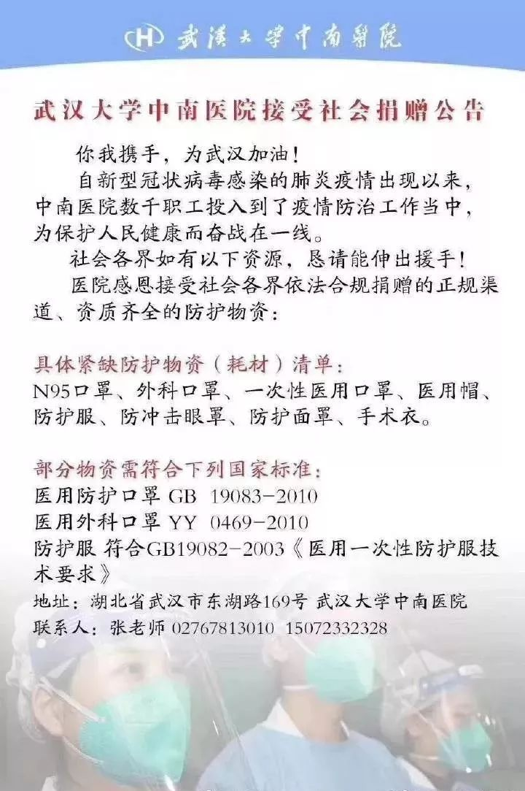
▼
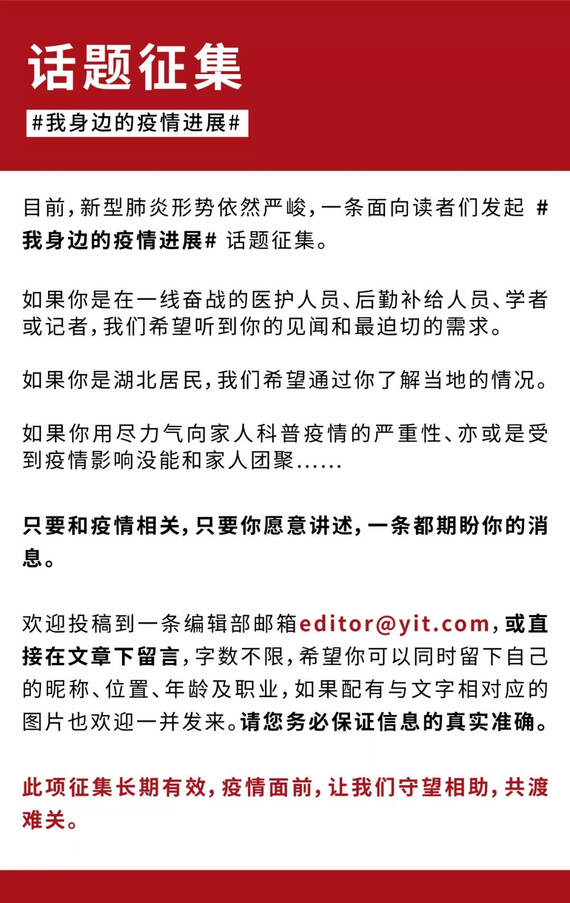


原文链接 备份链接 文 | 王彦入 王丹妮 程静之 殷盛琳 李晓芳 周航 叶雯 曾宪雯 编辑 | 王珊 陶若谷 33岁的刘科戴上两层口罩独自走进地铁，夹杂在路人中间。像他这样拉着行李箱的人并不少见，彼此间默契地保持着距离。三天前，他刚刚从 …
原文链接 备份链接 本视频为今年的年三十，武汉父母与身在外地的孩子 隔空互送新年祝福 年夜饭，是中国人最看重的家庭宴会。1月24日，武汉封城第二天，年三十，有23个武汉人给我们分享了他们的年夜饭。 @王启明： 今天是武汉封城的第二天，也是 …
原文链接 备份链接 1月23日凌晨，武汉宣布自10时起，全市的航空、铁路、城市公交、地铁、轮渡、长途客运暂停运营，无特殊原因，市民不要离开武汉。新型冠状病毒肺炎，正考验着这座九省通衢的特大城市。 此后24小时，真实故事计划访问了几位选择留 …
原文链接 备份链接 图源B站UP主林晨同学自制视频 九位在武汉度过了除夕夜的普通人，他们从事着不同的职业，拥有不同的人生经历，但都在这座城市度过了可能是人生中最难忘的一个除夕。他们讲述的，不只是一个简单的夜晚，而是一场大疫之下，一个个普通 …
原文链接 备份链接 这名医生担心疫情在黄冈下面的县市地区进一步扩散。「现在所有人都把目光放在武汉，少有人注意到周边地区。这些地区的医疗物资本来就不足，要是没人关注的话，就会变成第二个武汉。」 文｜****苏东 编辑｜**** …